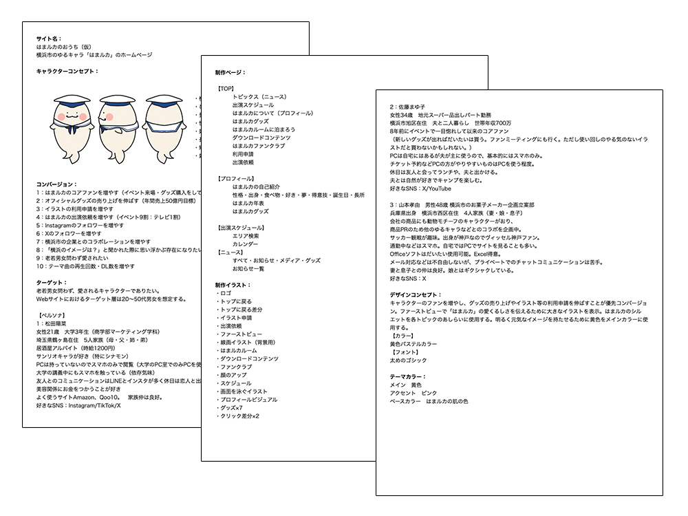
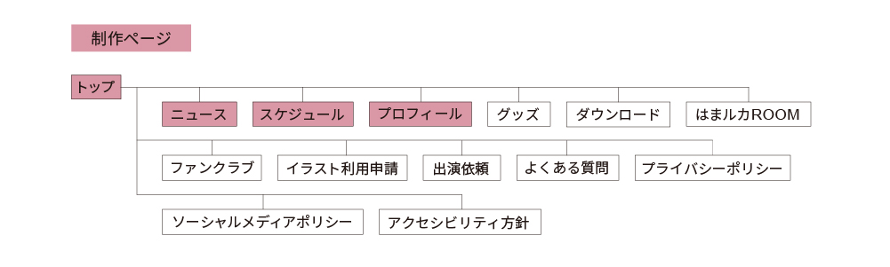
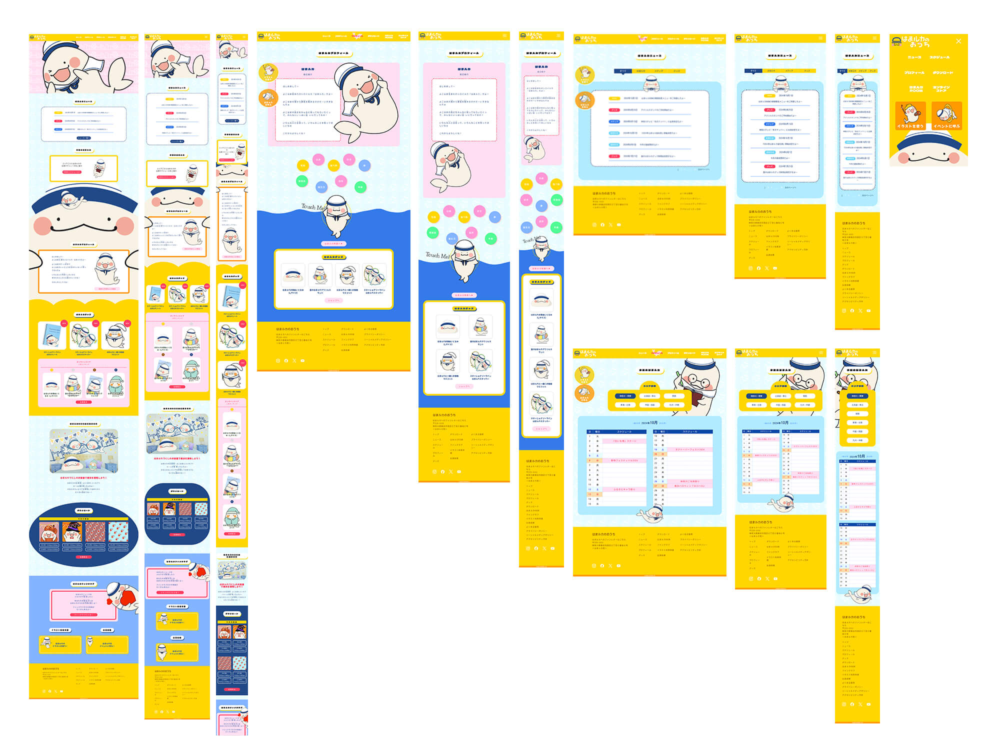
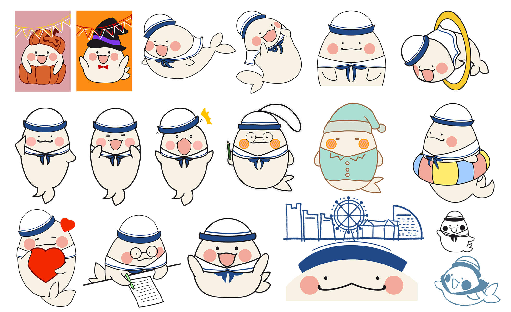

新規ユーザー代表
松田陽菜
サンリオキャラが好きでグッズ収集に関心が高い。 スマホ中心の生活でInstagram・TikTok・Xをよく利用。 「新しくて可愛い」キャラクターとの出会いを常に求めている層。
Character Website for Fans & Brand Collaborations
Overview
プロジェクト
自主制作 キャラクターWebサイト
制作期間
約1ヶ月半 2024.08.29 — 2024.10.01
担当範囲
全工程 企画・設計・デザイン・実装・イラスト
Character — キャラクターについて
横浜出身のシロイルカ「はまルカ」。ひとなつっこく明るい性格で、のんびりやさん。 登場から10周年を迎え多くの人に愛されてきたキャラクター。横浜と言えば「はまルカ」と思い浮かべられる存在として、様々な企業とのコラボレーションも行っている。
そんな架空のキャラクター「はまルカ」の公式Webサイトを、企画から実装・イラスト制作まで一人で完結させた。
Challenge — 課題
このサイトが達成すべきゴールは3つ。【コアファンの増加】【オフィシャルグッズの売上増加】【イラスト利用申請・出演依頼の増加】
しかも訪れるユーザーは、既存のコアファン・新規ユーザー・コラボ検討中の企業担当者という動機のまったく違う3種類。
コアファンには「新鮮さ」を、新規ユーザーには「キャラクターへの共感」を、企業担当者には「信頼感と実績」を、それぞれ同じファーストビューから伝える必要があった。
どこに誰のための情報を置くかという導線設計が、最大の課題だった。
Personas — 想定ユーザー
新規ユーザー代表
サンリオキャラが好きでグッズ収集に関心が高い。 スマホ中心の生活でInstagram・TikTok・Xをよく利用。 「新しくて可愛い」キャラクターとの出会いを常に求めている層。
コアファン代表
8年前のイベントで一目惚れして以来のコアファン。 ファンミーティングにも参加し、新作グッズは基本すべて購入。 「飽きのこないアウトプットと新しい体験」を期待している層。
コラボ検討企業 代表
自社商品PRのためゆるキャラとのコラボを企画中。 「信頼できる実績と仕事の依頼窓口の明確さ」を重視。PC中心の閲覧で、情報の正確さ・わかりやすさが判断材料になる層。
Solution — 解決
ファーストビューは「キャラクターに一目惚れさせること」に特化し、説明より感情を優先。大きなオリジナルイラストでキャラクターの存在感を全面に出した。
スクロールに従って「キャラクターを知る→好きになる→行動する」 という流れを設計。グッズ購入・利用申請という目的の異なる2つのCVへの導線は、それぞれ異なるセクションから自然につながる構造を考えた。
クリックでイラストが変化するインタラクションは、ファンが「遊べる体験」を意図して実装。コアファンの滞在時間を伸ばし、愛着形成につなげることを狙う。
Planning & Structure — 設計資料


Design Thinking
優先CVをグッズ購入・利用申請の2軸に設定し、3種のターゲット が異なる動機で訪れることを前提に情報設計。 新規ファン獲得にはキャラクターの魅力を瞬時に伝えることが最優先と判断し、 ファーストビューにオリジナルイラストを大きく配置した。
「明るく親しみやすい」印象を色で体現するためメインカラーに黄色を選定。 補色となるキャラクター衣装の紺・青で画面を引き締め、 アクセントの濃いピンクはCTAと強調に絞って使用することで 視線を購買・申請アクションへ誘導した。
タイトルには視認性と力強さの太めのゴシック、 キャラクターの発話部分は親しみやすい丸ゴシック、 情報密度の高い数字や英字には欧文フォントを当てることで、 可読性とリズムを両立した。
CSSキーフレームとjQueryで上下・左右の動きのあるアニメーションを実装。 クリックでイラストが変化するインタラクションは、 ファンを喜ばせることを第一に設計した。
Design Comp


Reflection — 振り返り
現在Webデザイナーとして実務経験を積み、さらにユーザーの視点で設計を見る意識を養った。
ユーザーが迷わないかどうかといった観点でワイヤーフレームを見直した経験から、このサイトについて改めて考えるとグッズ購入と利用申請という目的の違うCVはさらに明確にページなどを分けて設計したほうが良いと考える。クライアントの要望として設計したものがユーザーにとって優しいものか第一に考えていきたい。